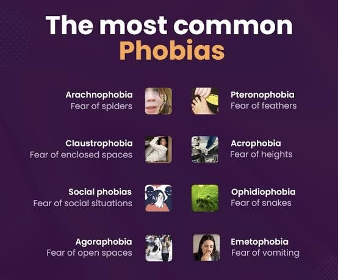
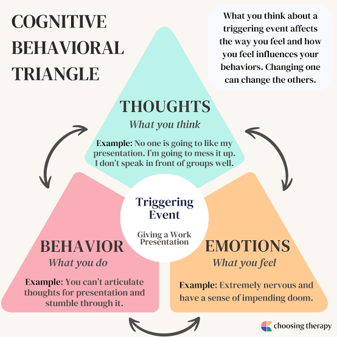

Breaking Down Barriers: Exploring the Many Faces of Anxiety
Think of your biggest fear: an insect, enclosed spaces, and death; as you are thinking about it, some may shudder and be repulsed; some may begin to sweat profusely at the thought of it and will feel an immense amount of anxiety that disrupts their way of life - this is known as specific phobia, a type of anxiety disorder.
What are Anxiety Disorders?
Everyone experiences anxiety and goes through circumstances that cause them to be stressed and anxious; however, anxiety disorders are classified as excessive and persistent anxiety that causes immense disruption in the course of our lives and results in disruptive behaviour. Anxiety disorders are considered common in comparison to other disorders, and it diverge into numerous types of anxiety disorders.
.jpg)
What are the types of Anxiety Disorders?
Specific Phobia
In this anxiety disorder, the individual experiences extreme and persistent fear and anxiety regarding an object or situation to the point of disturbance. For example, an individual who has a phobia of heights gets a job offer on the 10th floor and will turn down that job because of their fear - this fear has resulted in a setback in their life.

Agoraphobia
A person diagnosed with agoraphobia is overwhelmed with fear and anxiety in situations where escape may be difficult or if receiving help in a case of a panic attack is not available. An example would be enclosed spaces, parking lots, and public transportation.
Social Anxiety
In cases of social anxiety, the individual dreads and is overcome with fear and anxiety in social situations, such as speaking in public, eating in public, or any social gathering. They fear that they will be judged for their reactions; as a result, they engage in safety behaviours, such as asking questions about the other person to keep the attention off of them, blending into the background, or avoiding eye contact.
.jpg)
Panic Disorder
An individual who experiences reoccurring and unexpected panic attacks for at least one month, along with the fear of another panic attack. During a panic attack, the persistent fear develops and reaches a peak within 10 minutes; the person experiences accelerated heart rate, shortness of breath, sweating, trembling, dizziness or lightheadedness, and fears of losing control or fears of dying.
.jpg)
Post-Traumatic Stress Disorder
PTSD, a disorder that is portrayed by the media to mainly affect soldiers, is an anxiety disorder where the individual experiences or witnesses a traumatic event, such as actual or threatened death, serious injury, or sexual violence. The person experiences flashbacks, which is a state in which they are taken back to the event causing them to relive it; consequently, they tend to avoid any stimulus that is related to the event. Because of the event, they tend to become more detached, irritable, and prone to outbursts and exaggerated startle responses.
.jpg)
.jpg)
Generalized Anxiety Disorder
This type is characterized by a continuous state of pointless worry and apprehension. The worry is over routine, everyday things, financial and familial matters, and they are not justifiable. To be diagnosed with this disorder, persistent and worthless anxiety for most days of six months along with three of the six symptoms: muscle tension, irritability, restlessness, difficulty concentrating, sleep difficulties, and being easily fatigued.
.jpg)
While, generally, people assume that the development of anxiety disorders arises from a specific event that occurred, there is more to the development of disorders than a single event. Many psychologists have proposed theories for the development of some anxiety disorders, such as specific phobia, PTSD, social anxiety, and panic disorder.
How do Anxiety Disorders develop?
Classical Conditioning:
Classical conditioning is a type of learning where you pair a neutral stimulus ( a stimulus that does not have a natural response) with an unconditioned stimulus ( a stimulus that stimulates a natural response) until the neutral stimulus elicits a conditioned response, which is the same response as that to the unconditioned stimulus.
.jpg)
As an application of this learning in relation to phobias, you may have seen a dog ( a neutral stimulus), and it bit you (unconditioned stimulus) because of the bite you are now afraid (unconditioned response); however, because the dog bit you, you associate the fear with the dog making it a conditioned response.
The same concept can also be a theory as to why individuals develop social anxiety. If a child from a young age undergoes a negative experience or judgment during a social situation, this can cause the child to portray themselves negatively in their mind which can provoke anxiety during social situations.
Similarly, some psychologists propose that panic attacks are conditioned responses to subtle changes in our physiology that resemble those that occur when we are overcome with anxiety. For instance, if someone with panic disorder is suddenly feeling like they cannot catch their breath, they begin to panic because they are fearful of experiencing a panic attack, which eventually leads to them experiencing one.
.jpg)
Lastly, in PTSD, the traumatic event can act as the unconditioned stimulus which stimulates the unconditioned response of fear. The environmental stimuli, such as the cognitive, emotional, and physiological stimuli can act as the neutral stimuli that eventually become the conditioned stimuli. Therefore, if a person has developed PTSD because they were sexually assaulted in a club or a house party, conditioned stimuli can be the stench of alcohol; consequently, when they smell alcohol, they are overcome by extreme fear.
Vicarious Learning:
Through observing another individual acting fearful of something, you can also develop a phobia. For example, watching someone running away and crying from a snake may cause you to develop the same fear. In addition, constantly being told that something is scary may cause you to fear it because it is repeatedly reinforced in your mind that you should be fearful and cautious of that object or situation.
Cognitive Factors:
The disturbances in the memory of the event in the development and maintenance of PTSD is considered important. Consider the example of a rape victim, they may not have a complete recollection of the event; they may remember fragments, such as what their attacker said. This fragmentary memory haunts the victim because it is the most prominent part of the memory of the event.
In addition to disturbances, the negative evaluation of the trauma and how it impacts us. Some patients may evaluate the situation negatively, such as I deserve for this to happen to me which results in dysfunctional behaviour like avoiding certain locations; this maintains the symptoms of PTSD by creating an obstacle in the journey of healing.
Evidently, one of the key factors of being diagnosed with an illness is the disruptions that come with this illness and how it can create complications in the near and far future.
What are some complications that arise with Anxiety Disorder?
- Some illnesses are comorbid, meaning that they go hand in hand with one another in some cases. In certain situations, an individual with an anxiety disorder may develop a mood disorder, such as major depression disorder.
- As previously stated, our negative evaluation of the event can stimulate harmful behavior, such as substance abuse.
- Our emotions are greatly tied to our ability to sleep. Sadly, in some cases, those who have an anxiety disorder tend to deal with insomnia, the inability to sleep.
- Issues in our digestive and bowel problems, as well as chronic pain and headaches can arise due to our emotions. Our emotional turmoil can be reflected in physiological issues.
- Do you sometimes feel as though you can feel people's anxiety or stress and that causes you to be stressed? Because anxiety and stress can be emitted, some prefer social isolation.
- Of course, having a psychological illness will cause the mind to be constantly preoccupied causing problems and issues in performance at work or at school.
- Clearly, these complications in social and professional relationships, in addition to physiological issues will result in a poor quality of life.
- In extreme cases, the person may be suicidal and feel as though the only way to rid themselves of these overwhelming emotions is to die.
To prevent the complications from infiltrating our lives and eventually leading to suicide, numerous courses of action can be taken depending on the type of anxiety disorder the individual suffers from.
What are treatments for Anxiety Disorders?
Exposure Therapy:
The therapist aims to distinguish the fear and anxiety in people with agoraphobia, social anxiety, and PTSD. By exposing the client to the situation along with reinforcing the concept of adapting and get used to it, the anxiety over time will begin to lessen. The exposure can be through virtual reality, imagination, or reality. In the case of virtual reality, the stimulation given will allow them to eventually conquer their fears.
In addition to virtual reality, another technique is systematic desensitization. The client creates a list in hierarchical order of what makes him/ her from least to most fearful. For example, in the case of a fear of rabbits, they would look at a photo, then look at the rabbit from a distance, and so on until the scenario which causes the most anxiety, touching the rabbit. The therapist teaches the client to couple breathing and relaxation techniques by reinforcing the concept that a person cannot be relaxed and nervous at the same time.
.jpg)
Cognitive-Behavioral Therapy:
In this type of therapy, the therapist connects and comprehends how our thoughts have an impact on our behaviour. Consequently, they learn how to change their thinking to change their course of behaviour. Therefore, this type of therapy is very effective because it teaches the clients to engage in a healthy thought process which inspires healthy and beneficial behavior.

Biomedical:
In some extreme cases, the therapist may direct the client to a psychiatrist. The psychiatrist may prescribe medication for the patient, such as anti-anxiety pills, certain antidepressants, or sedatives.
.jpg)
In cases of feelings of anxiety and not anxiety disorders, the person can cope with these emotions through:
- Talking about your emotions with other people
- Relaxation and breathing exercises
- Being mindful
- Exercise because that releases certain hormones that can brighten your mood
- Try to sort your thoughts and worries and determine whether there is something that can be done.
Think of your biggest fear: an insect, enclosed spaces, and death; as you are thinking about it, some may shudder and be repulsed; some may begin to sweat profusely at the thought of it and will feel an immense amount of anxiety that disrupts their way of life - this is known as specific phobia, a type of anxiety disorder.